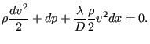
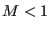
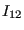
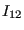

The gas pipe element of type Fanno is a pipe element with constant cross section (Figure 93), for which the Fanno formulae are applied [76].
The friction parameter is determined as
| (57) |
for laminar flow ( Re) and
| (58) |
for turbulent flow. Here,  is the diameter of the material grains at the surface of the pipe
and Re is the Reynolds number defined by
is the diameter of the material grains at the surface of the pipe
and Re is the Reynolds number defined by
| Re | (59) |
where  is the fluid velocity and
is the fluid velocity and  is the kinematic viscosity.
is the kinematic viscosity.
It is described by the following parameters (to be specified in that order on the line beneath the *FLUID SECTION,TYPE=GAS PIPE FANNO ADIABATIC or *FLUID SECTION,TYPE=GAS PIPE FANNO ISOTHERMAL card):
The default gas pipe is adiabatic, i.e. there is no heat exchange with the pipe. Alternatively, the user may specify that the pipe element is isothermal. This means that the static temperature does not change within the pipe. In that case the energy equation in one of the two end nodes of the element is replaced by an isothermal condition.
The form factor  is only used to modify the friction expression for
non-circular cross sections in the laminar
regime as follows:
is only used to modify the friction expression for
non-circular cross sections in the laminar
regime as follows:
 |
(60) |
Values for  for several cross sections can be found in
[13]. For a square cross section its value is 0.88, for a rectangle
with a height to width ratio of 2 its value is 0.97.
for several cross sections can be found in
[13]. For a square cross section its value is 0.88, for a rectangle
with a height to width ratio of 2 its value is 0.97.
Instead of specifying a fixed diameter and length, these measures may also be calculated from the actual position of given nodes. The version in which the radius is calculated from the actual distance between two nodes a and b is described by the following parameters (to be specified in that order on the line beneath the *FLUID SECTION,TYPE=GAS PIPE FANNO ADIABATIC FLEXIBLE RADIUS or *FLUID SECTION,TYPE=GAS PIPE FANNO ISOTHERMAL FLEXIBLE RADIUS card):
The version in which the radius is calculated from the actual distance between two nodes a and b and the length from the actual distance between nodes a and c is described by the following parameters (to be specified in that order on the line beneath the *FLUID SECTION,TYPE=GAS PIPE FANNO ADIABATIC FLEXIBLE RADIUS AND LENGTH or *FLUID SECTION,TYPE=GAS PIPE FANNO ISOTHERMAL FLEXIBLE RADIUS AND LENGTH card):
Although a gas pipe looks simple, the equations for compressible flow in a pipe are quite complicated. Here, the derivation is first presented for the adiabatic case. Starting from the energy equation (34) and using the relation for an ideal gas one arrives at:
By means of the definition of the Mach number (28) one gets
| (62) |
Because of the ideal gas equation
 this can also be written as:
this can also be written as:
Looking at Figure (94) the momentum equation can be derived by
applying Newton's second law, which states that the sum of the forces is the
change of momentum ( is the diameter of the pipe,
is the diameter of the pipe,  its cross section):
its cross section):
 |
(64) |
or, using Darcy's law ( is the Darcy friction factor)
is the Darcy friction factor)
 |
(65) |
 |
(66) |
One can remove the density by means of the gas equation arriving at:
Combining this with what was obtained through the energy equation (63) leads to (removing p in this process):
| (68) |
This equation contains both  and
and  . We would like to get an equation with
only one of these parameters. To this end the equation defining the Mach
number (28) is differentiated and the energy equation in the form
(61) is used to remove T, leading to:
. We would like to get an equation with
only one of these parameters. To this end the equation defining the Mach
number (28) is differentiated and the energy equation in the form
(61) is used to remove T, leading to:
| (69) |
In that way, the previous equation can be modified its final form:
| (70) |
expressing the Mach number as a function of the distance along the
pipe. This equation tells us that for subcritical flow () the Mach
number increases along the pipe whereas for supercritical flow () the Mach number decreases. Consequently, the flows tends to  along
the pipe. Notice that by assigning the sign of
along
the pipe. Notice that by assigning the sign of  to
to  the above equation also
applies to negative velocities. Substituting
the above equation also
applies to negative velocities. Substituting  and integrating both sides yields:
and integrating both sides yields:
 |
(71) |
Since (partial fractions)
 |
(72) |
one obtains finally
linking the Mach number  at the start of the pipe with the Mach number
at
the end of the pipe, the pipe length  and the Darcy friction coefficient
and the Darcy friction coefficient
 .
.
Notice that Equation (67) can be used to calculate an estimate of the mass flow due to a given pressure gradient by assuming incompressibility. For an incompressibile medium in a pipe with constant cross section the velocity is constant too (mass conservation) and Equation (67) reduces to:
 |
(74) |
Integrating yields:
 |
(75) |
or
| (76) |
which can finally also be written as:
| (77) |
Equation (73) is the governing equation for an adiabatic gas
pipe. In order to apply the Newton-Raphson procedure (linearization of the
equation) with respect to the variables ,  ,
,  ,
and
,
and  , this equation is first derived w.r.t and
(denoting the equation by
, this equation is first derived w.r.t and
(denoting the equation by  ; the derivation is slightly tedious but
straightforward):
; the derivation is slightly tedious but
straightforward):
| (78) |
and
![$\displaystyle \frac {\partial f}{\partial M_2} = \frac{2}{\kappa M_2} \left [ \frac{1-M_2^2}{M_2^2 ( 1 + b M_2^2)} \right],$](img486.png) |
(79) |
where
 . Now,
. Now,  at position 1 and 2 is linked to ,
at position 1 and 2 is linked to ,  and
and  at the same location through the general gas equation:
at the same location through the general gas equation:
| (80) |
where
 and
and
 . Careful
differentiation of this equation leads to the surprisingly simple expression:
. Careful
differentiation of this equation leads to the surprisingly simple expression:
where
![$\displaystyle e= \left[ \frac{M(1+bM^2)}{1+bM^2(1+2c)} \right].$](img492.png) |
(82) |
Finally, the chain rule leads to the expressions looked for:
 |
(83) |
etc.
For the isothermal pipe the ideal gas equation leads to:
 |
(84) |
and from the mass conservation, Equation (39) one gets:
 |
(85) |
Furthermore, the definition of the Mach number yields:
 |
(86) |
finally leading to:
 |
(87) |
By substituting these relationships and the definition of the Mach number one can reduce all variables in Equation (67) by the Mach number, leading to:
| (88) |
This equation shows that for an isothermal gas pipe the flow tends
to
 and not to 1 as for the adiabatic pipe. Substituting
and not to 1 as for the adiabatic pipe. Substituting  and integrating finally yields:
and integrating finally yields:
 |
(89) |
The above equation constitutes the element equation of the
isothermal gaspipe. Applying the Newton-Raphson procedure requires the
knowledge of the derivatives w.r.t. the basis variables. The procedure is
similar as for the adiabatic gas pipe. The derivative of the element equaton w.r.t. and is easily obtained
(denoting the left side of the above equation by  ):
):
| (90) |
and
| (91) |
The use of an isothermal gas pipe element, however, also requires the change of the energy equation. Indeed, in order for the gas pipe to be isothermal heat has to be added or subtracted in one of the end nodes of the element. The calculation of this heat contribution is avoided by replacing the energy equation in the topologically downstream node (or, if this node has a temperature boundary condition, the topologically upstream node) by the requirement that the static temperature in both end nodes of the element has to be the same. This is again a nonlinear equation in the basic unknowns (total temperature and total pressure in the end nodes, mass flow in the middle node) and has to be linearized. In order to find the derivatives one starts from the relationship between static and total temperature:
| (92) |
where
 . Differentiation yields:
. Differentiation yields:
| (93) |
Replacing  by Equation (81) finally yields an expression
in which
by Equation (81) finally yields an expression
in which  is expressed as a function of
is expressed as a function of  , and .
, and .
Example files: gaspipe10, gaspipe8-cfd-massflow, gaspipe8-oil.